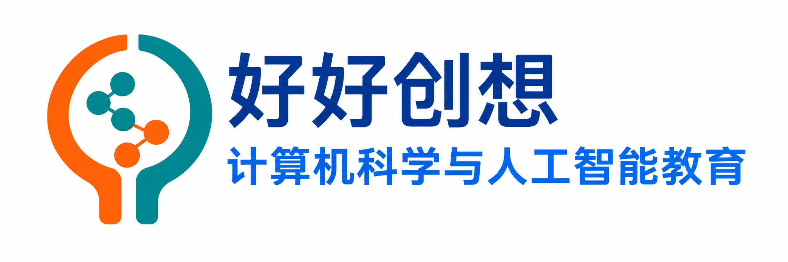

01 · 算法与计算思维
Algorithms & Computational Thinking
培养逻辑思维与算法设计能力，学习分析问题、拆解复杂任务，并运用不同的算法策略设计更加高效的解决方案。
算法设计 · 问题求解 · 计算复杂度 · 算法优化
第二年
算法 · 数据结构 · 软件开发 · Web 应用
培养逻辑思维与算法设计能力，学习分析问题、拆解复杂任务，并运用不同的算法策略设计更加高效的解决方案。
算法设计 · 问题求解 · 计算复杂度 · 算法优化理解数据的组织、存储与处理方式，掌握不同数据结构的特点及应用场景，并通过树、图等问题实践，提升复杂问题的分析与解决能力。
数据结构 · 逻辑推理 · 树与图的应用 · 算法实践从基础程序迈向交互式软件开发，学习设计图形用户界面、处理用户交互，并通过 API 连接外部服务，将不同技术整合为实用的应用程序。
应用程序开发 · 图形界面 · 交互设计 · API 集成学习使用 Python 处理和分析真实数据，通过数据可视化发现数据中的规律，并初步探索利用数学模型进行分析与预测的方法。
数据处理 · 数据分析 · 数据可视化 · 预测建模了解现代 Web 应用的开发流程，学习构建交互式网页，并结合 Python 后端技术，实现前端与后端的数据交互，开发完整的动态 Web 应用。
Web 开发 · 前端与后端 · 动态网站 · 全栈应用学生将建立更加系统和深入的计算机科学知识体系，能够运用算法与数据结构解决复杂编程问题，使用 Python 处理和分析真实数据，开发交互式软件，并构建具有前后端交互功能的动态 Web 应用。在具备编程基础、算法思维和应用开发能力之后，学生将进一步进入人工智能领域，探索机器学习、大语言模型及 AI 应用开发。